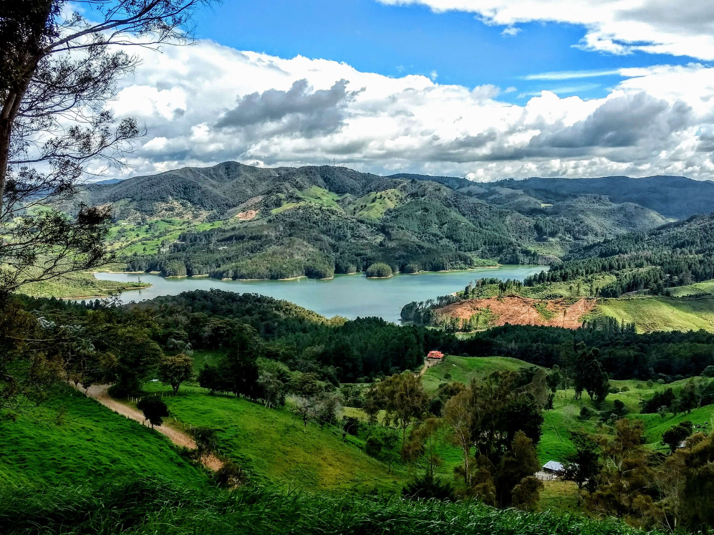
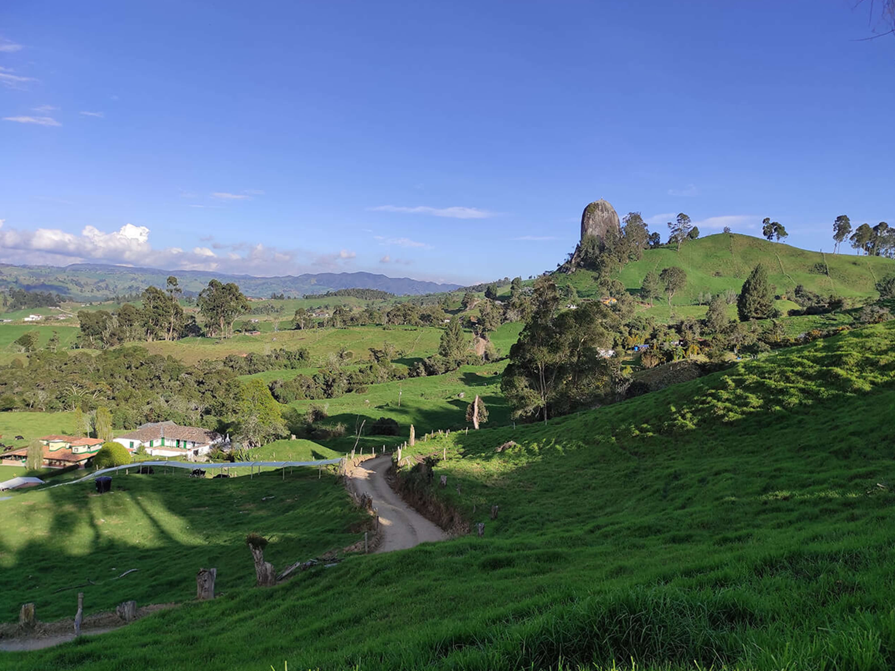

Parque principal de Entrerríos
Muchos años de tradición reflejados en uno de los lugares mas visitados del municipio.
Parque principal de Entrerríos
Muchos años de tradición reflejados en uno de los lugares mas visitados del municipio.
Darwin Faruth Hoyos palacio.
El municipio es destacado por la gran variedad de panoramas que posee.
Este espectacular monolito, es de los sitios más reconocidos. Además, contamos con recorrido opcional incluido en su reserva.
Darwin Faruth Hoyos palacio.
